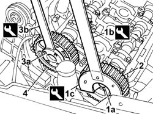
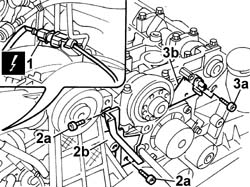
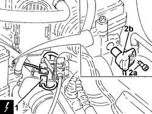

1056B51 CAM ANGLE SENSOR - R.R.
- Path
- Procedures > 10 ENGINE > 1056 PETROL FUEL INJECTION SYSTEM > 1056B MULTI-POINT INJECTION SYSTEM (MPI) > 1056B51 CAM ANGLE SENSOR - R.R.
- Kind
- repair procedure (removal / refitting; the operation number is the code)
- Applies to
- engines: 2.0 TB, 2.4 20V, 3.0 V6, 3.2 V6; all production periods
- Interactive page
- https://sloeber94.github.io/elrnDB-lThss/en/#/93639
Applies to: engines: 2.0 TB, 2.4 20V; all production periods
 Removing
Removing
 Refitting
Refitting- Position the vehicle on a lift.
- Open the boot, remove the cover on the left hand side and disconnect the negative battery lead.
See in Op. 7040D50 ENGINE COMPARTMENT UPPER SOUND INSULATION SHIELD - R.R.
See in Op. 4450B04 Right FRONT WHEEL (one) - R.R.
- Raise the vehicle on the lift.
See in Op. 7055B54 PROTECTION/GUARD under engine - R.R.
See in Op. 7055B42 FRONT WHEEL ARCH LINER (one), left or right - R.R.
See in Op. 7055B64 Engine compartment DUST SEAL in front wheel arch (one), left or right - R.R.
Applies to: engines: 2.4 20V; all production periods
See in Op. 1048A28 vacuum air circuit resonator pipe - r+r
See in Op. 1048A21 AIR INLET HOSE FROM INTAKE TO FILTER - R.R.
Applies to: engines: 2.0 TB; all production periods
See in Op. 1048A21 AIR INLET HOSE FROM INTAKE TO FILTER - R.R.
Applies to: engines: 2.0 TB, 2.4 20V; all production periods
See in Op. 1016A40 Ignition COIL COVER on cylinder head - R.R.
See in Op. 1092G10 Engine components single drive BELT - R.R.
See in Op. 1092A10 Crankshaft PULLEY - R.R. for versions with air conditioner
See in Op. 1032D12 Timing system protective COVER(S) - R.R.
See in Op. 1032B10 TOOTHED timing BELT - R.R. for timing adjustment or replacement
1. Undo the bolt (1a) for the exhaust side timing driven pulley using the tools (1b) and (1c) for counter-torque.
 | Description | Code | Function |
|---|---|---|---|
1b | Support for counter-torque | 1.860.831.000 | Loosen/tighten driven toothed pulley bolt |
| Description | Code | Function |
|---|---|---|---|
1c | Spanner for rotating timing pullies | 1.860.831.002 | Loosen/tighten camshaft drive pulley bolt |
2. Remove the exhaust side timing driven pulley.
3. Undo the inlet side timing driven pulley bolts (3a) using the tool (3b) for counter-torque.
| Description | Code | Function |
|---|---|---|---|
3b | Counter-torque | 1.860.856.000 | Loosen/tighten inlet side camshaft drive pulley bolts |
4. Remove the inlet side timing driven pulley.

Applies to: engines: 2.0 TB, 2.4 20V; all production periods
1. Disconnect the electrical connection for the cam angle sensor.
 | Description | Connector |
|---|---|---|
1 | Timing sensor | K047 |
2. Undo the bolts (2a) and remove the guard (2b).
3. Undo the bolts (3a) and remove the cam angle sensor (3b).

Applies to: engines: 2.0 TB, 2.4 20V; all production periods
Refitting
Removing- Position the cam angle sensor and secure it using the bolts.
 | Value - daNm | Fastening | Component | Ø |
|---|---|---|---|---|
. | 0.9 | Bolt | CAM ANGLE SENSOR CAMSHAFT | M6 |
- Position the cam angle sensor wiring and fit the guard.
- Connect the electrical connection for the cam angle sensor.
| Description | Connector |
|---|---|---|
. | Timing sensor | K047 |
- Position the inlet side timing driven pulley and secure it without tightening the bolts.
- Position the exhaust side timing driven pulley and secure it without tightening the bolt.
See in Op. 1032B10 TOOTHED timing BELT - R.R. for timing adjustment or replacement
See in Op. 1032D12 Timing system protective COVER(S) - R.R.
See in Op. 1092A10 Crankshaft PULLEY - R.R. for versions with air conditioner
See in Op. 1092G10 Engine components single drive BELT - R.R.
See in Op. 1016A40 Ignition COIL COVER on cylinder head - R.R.
Applies to: engines: 2.0 TB; all production periods
See in Op. 1048A10 COMPLETE AIR FILTER -R.R.
See in Op. 1048A50 air inlet pipe to turbocharger - r + r
See in Op. 1048A21 AIR INLET HOSE FROM INTAKE TO FILTER - R.R.
Applies to: engines: 2.4 20V; all production periods
See in Op. 1048A10 COMPLETE AIR FILTER -R.R.
See in Op. 1048A23 Cold AIR INTAKE for air filter - R.R.
See in Op. 1048A21 AIR INLET HOSE FROM INTAKE TO FILTER - R.R.
Applies to: engines: 2.0 TB, 2.4 20V; all production periods
See in Op. 7055B64 Engine compartment DUST SEAL in front wheel arch (one), left or right - R.R.
See in Op. 7055B42 FRONT WHEEL ARCH LINER (one), left or right - R.R.
- Lower the vehicle on the lift.
See in Op. 4450B04 Right FRONT WHEEL (one) - R.R.
- Connect the negative battery lead.
See in Op. 0010T20 Engine REFRIGERANT FLUID - Change
See in Op. 7055B54 PROTECTION/GUARD under engine - R.R.
See in Op. 7040D50 ENGINE COMPARTMENT UPPER SOUND INSULATION SHIELD - R.R.
- Remove the vehicle from the lift.
Applies to: engines: 3.0 V6, 3.2 V6; all production periods
Removing
RefittingSee in Op. 5530B10 BATTERY - R.R.
- Make sure that the ignition key is in the OFF position, then disconnect the negative battery terminal (-).
- [7040D12]
- [7040D14]
See in Op. 1048A28 vacuum air circuit resonator pipe - r+r
1. Disconnect the electrical connection from the cam angle sensor and release the wiring from the retaining bands.
| Description | Connector |
|---|---|---|
1 | Timing sensor | K047 |
2. Undo the bolts (2a) and remove the cam angle sensor (2b).

Applies to: engines: 3.0 V6, 3.2 V6; all production periods
Refitting
Removing- Fit the cam angle sensor and secure it using the bolts.
- Connect the electrical connection to the cam angle sensor and secure the wiring to the retaining bands.
| Description | Connector |
|---|---|---|
. | Timing sensor | K047 |
See in Op. 1048A28 vacuum air circuit resonator pipe - r+r
- [7040D14]
- [7040D12]
- Connect the negative battery terminal.
Topics linked from this page (17)
- 0010T20 Engine REFRIGERANT FLUID - Change
- 1016A40 Ignition COIL COVER on cylinder head - R.R.
- 1032B10 TOOTHED timing BELT - R.R. for timing adjustment or replacement
- 1032D12 Timing system protective COVER(S) - R.R.
- 1048A10 COMPLETE AIR FILTER -R.R.
- 1048A21 AIR INLET HOSE FROM INTAKE TO FILTER - R.R.
- 1048A23 Cold AIR INTAKE for air filter - R.R.
- 1048A28 vacuum air circuit resonator pipe - r+r
- 1048A50 air inlet pipe to turbocharger - r + r
- 1092A10 Crankshaft PULLEY - R.R. for versions with air conditioner
- 1092G10 Engine components single drive BELT - R.R.
- 4450B04 Right FRONT WHEEL (one) - R.R.
- 5530B10 BATTERY - R.R.
- 7040D50 ENGINE COMPARTMENT UPPER SOUND INSULATION SHIELD - R.R.
- 7055B42 FRONT WHEEL ARCH LINER (one), left or right - R.R.
- 7055B54 PROTECTION/GUARD under engine - R.R.
- 7055B64 Engine compartment DUST SEAL in front wheel arch (one), left or right - R.R.